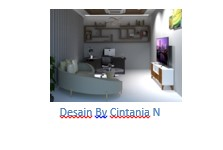
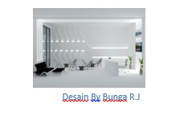
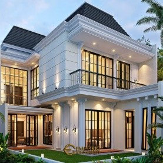

JAKARTA, KOMPAS.com - Dalam dekorasi rumah, Gen Z alias generasi yang lahir tahun 1995-2010 memiliki gaya unik tersendiri. Mengutip Vitruvius, arsitektur adalah ilmu yang timbul dari ilmu-ilmu lainnya, dan dilengkapi dengan proses belajar : dibantu dengan penilaian terhadap karya tersebut sebagai karya seni". Untuk aritektur pada zaman generasi Z, banyak yang mendesain ruangan tanpa sekat agar rumah terlihat lebih luas.
Bagi kalian yang pernah melihat/mengunjungi/bahkan memiliki rumah-rumah di kota besar seperti Jakarta contohnya, kalian pasti banyak menemukan rumah atau bangunan yang mempunyai keindahan serta ciri khas tersendiri. Namun bukan hamil muda untuk mendesain atau membangun rumah yang memiliki keindahan serta kelebihan tersendiri. Mereka harus mengeluarkan ide terbaik ataupun dana untuk membayar arsitek dalam desain rumah.
Tapi kalian tenang saja, di zaman generasi z saat ini banyak yang menggunakan desain yang simpel namun memiliki daya tarik di dalam rumah/bangunan tersebut.
Berikut beberapa macam arsitektur di zaman generasi z yang bisa menjadi inspirasi anda untuk membangun rumah.
1. Arsitektur modern
Arsitektur modern adalah suatu konsep bangunan yang mengedepankan kesederhanaan di banding ornamen hias. Melansir dari Archi Soup, arsitektur modern adalah pergerakan perubahan yang diawali pada akhir abad ke-19. Dengan kata lain, estetika desain rumah modern adalah upgrade dari bangunan penuh dekorasi di masa lalu seperti desain gothic dan Victoria. Berikut beberapa ciri arsitektur modern ; sedikit ornamen dan dekorasi, penggunaan cahaya natural dan jendela kaca, memaksimalkan fungsi ruangan.

2. Arsitektur minimalis
Konsep Arsitektur Minimalis adalah subuah konsep yang menghilangkan bagian tidak perlu,dan hanya menetapkan bagian penting . Interiordesign.id – Desain minimalis adalah salah satu gaya desain yang paling signifikan abad sekarang. Ini mungkin bukanlah yang paling populer, tetapi memiliki pengaruh ke hampir segala bidang. Konsep minimalis juga membuat rumah/bangunan terlihat lebih luas serta simple.

3. Arsitektur Futuristik
Konsep Futuristik adalah suatu konsep yang dirancang tanpa memandang masa lalu, dan merujuk pada masa yang akan datang ( Masa Depan ). Konsep Futuristik memiliki bentuk yang unik dan juga menarik. Sudah banyak di berbagai Negara mempunyai suatu bangunan ikonic dengan konsep Desain Futuristik. Bukan hanya bangunan ikonic sebuah Negara yang menggunakan Desain Futuristik , sudah banyak juga pada zaman ini orang-orang yang membangun rumah dengan Desain Futuristik.

4. Arsitektur Klasik Modern
Konsep Desain Klasik Modern adalah Suatu konsep yang berkelir klasik namun dikominasikan dengan gaya modern. Banyak yang berfikir bahwa gaya klasik akan terlihat norak ataupun jadul, tapi kalian tenang aja dengan ditambahkannya konsep modern didalamnya akan membuat rumah anda terlhat lebih elegan serta mewan namun terlihat sederhana.
Selain itu kita juga harus memperhatikan hal-hal apasaja yang dapat diterapkan pada Desain Klasik Modern. Yang pertama adalah terdapatnya unsur alam terutama kayu ataupun batu karena memberikan nuansa elegan dan simple. Lalu penggunan warna juga berpengaruh dalam terbentuknya Desain Klasik Modern ini , warna yang digunakan bukan warna klasik ( emas & merah ) melainkan warna kalem seperti putih, abu-abu, dan warna pastel.

Sumber: Pinteres#homeexteriordesign - Mrs. Zerli Modern Classic House 2 Floors Design - Jakarta - Code 19303
Setelah kita membahas tentang macam-macam Desain rumah yang sedang banyak di gandrungi oleh para generasi z, adakah dari contoh di atas yang menjadi favorit kalian, dan ingin kalian jadikan salah satu acuan dalam membuat rumah ?
Macam – Macam Arsitektur di Zaman Generasi Z